[N-World Contents] [Book Contents] [Prev] [Next] [Index]
Smooth with History
In this chapter you'll learn how to use the Smooth with History
operation to create smoothed copies of an object, using the original as a control object. You'll then learn how to create a test animation using the lo-res version of the object, swapping in the hi-res version later on. You'll also learn some new N-Geometry commands.
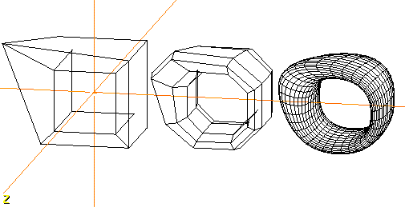
In this Chapter
You'll learn about the following topics:
Modifications
Transformations
Bridging through an Object
1. (CLICK-L) on GeoMenus>File> New Object>Cube.
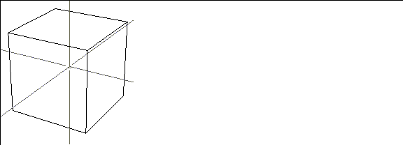
Figure 4.1 Starting with a primitive
2. (CLICK-R) on faces in the element sensitivity menu.
3. Collect two faces on opposite sides of the cube.
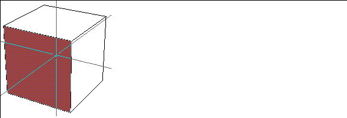
Figure 4.2 Collect faces on opposite sides of the cube
4. (SHIFT-L) on the collection, then (CLICK-L) on Inset.
- Specify an Inset Width value of .3 in the dialog box that appears.
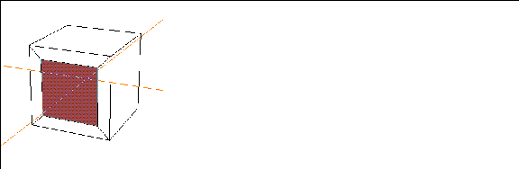
Figure 4.3 Inset the collected faces
5. (CLICK-L) on faces on the element sensitivity menu.
- This exits from collect mode.
6. (SHIFT-L) on the new, inner face on the front of the cube, then (CLICK-L) on Bridge.
7. Swing the camera around and (CLICK-L) on the corresponding face on the back of the cube.
- A "hole" is bridged through from one side of the object to the other:
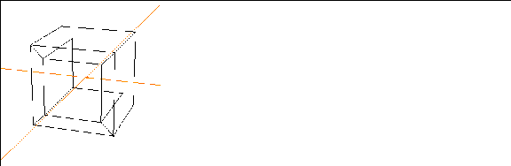
Figure 4.4 The bridged cube
For a better view of the bridge, turn shading on for the cube object:
8. (CLICK-L) on objects in the element sensitivity menu.
9. (SHIFT-L) on the cube.
10. (CLICK-L) on Shading.
- The object is displayed in shaded mode:
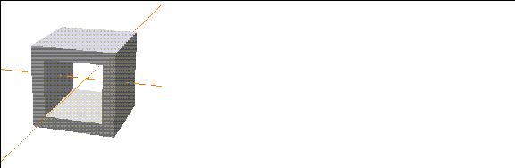
Figure 4.5 A shaded version of the bridged cube
Smooth w/History
The Smooth w/History command lets you create smoothed copies of an object that can be updated based on the lower-resolution control object from which they were generated.
This is useful, for example, when using N-Geometry with N-Dynamics to animate a complex object; you can animate the lower-resolution "control" object to test animations, then substitute the higher-resolution smoothed object for your final animation (simply by selecting the apprporiate object in your N-Dynamics script).
To create a smoothed copy of an object:
11. (CLICK-L) on bodies in the sensitivity element menu.
12. (SHIFT-L) on the cube.
13. (CTRL-L) on Smooth.
- In the dialog box that appears:
Figure 4.6 Smoothing an object with history creates a control object
- The new cube is created, but right now it's sitting in the same spot as the original.
14. Turn off the shading for both cubes:
- Shading for the cubes is turned off:
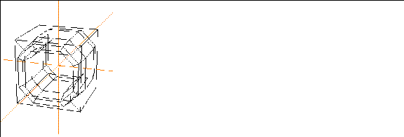
Figure 4.7 The original and smoothed copy of the cube
15. Move the smoothed cube away from its control object using the following steps:
- Move the object away from the control object:
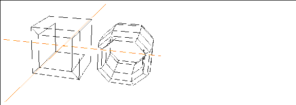
Figure 4.8 The smoothed copy transformed along the X
16. (CLICK-L) on points on the element sensitivity menu.
17. (SHIFT-L) on a corner point of the unsmoothed cube, then (CLICK-L) on Move.
- As you move the point on the control object (the unsmoothed version), the smoothed copy is updated too:
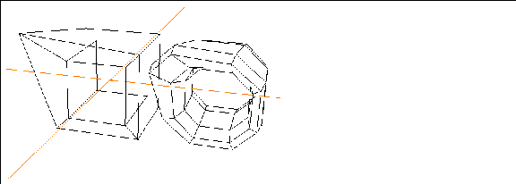
Figure 4.9 Using the control object
18. Try repeating steps 12 through 13, only this time, specify that the cube be smoothed 3 iterations in step 13:
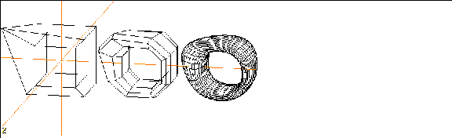
Figure 4.10 Create multiple versions of the object
- Note that the new copy follows the control object as well. Try moving a point on the control object and see both of the smoothed copies follow.
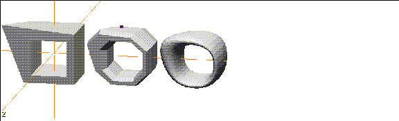
Figure 4.11 Shaded versions of the objects
Using Smoothed Copies with N-Dynamics
When you create an animation, you can use the unsmoothed version of an object to test such things as rotations, flight paths, etc., to get the look and feel of your animation right. Because the unsmoothed versions have fewer polygons, they typically take less time to animate than the smoother version.
After your script is working the way you want, you can simply substitute the smoothed, hi-res version of your object for the non-smoothed lo-res version and reanimate the script.
Congratulations!
You've learned how to:
[N-World Contents] [Book Contents] [Prev] [Next] [Index]
 Another fine product from Nichimen documentation!
Another fine product from Nichimen documentation!
Copyright © 1996, Nichimen Graphics Corporation. All rights
reserved.